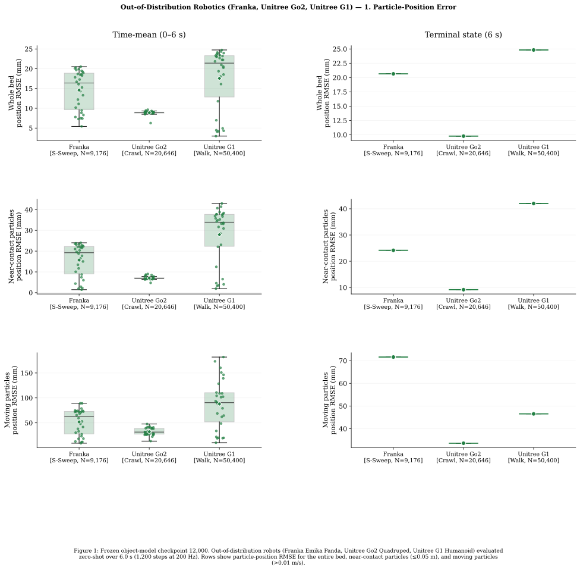
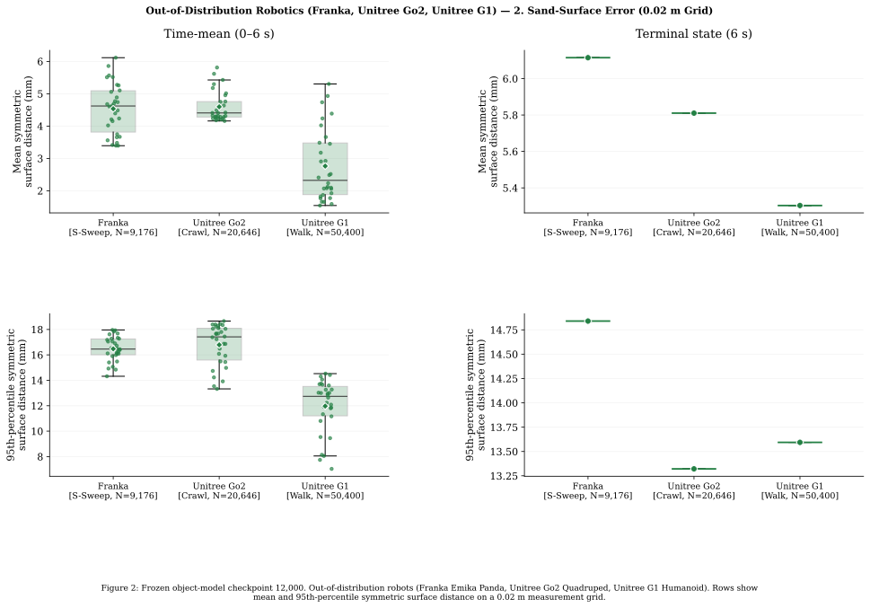
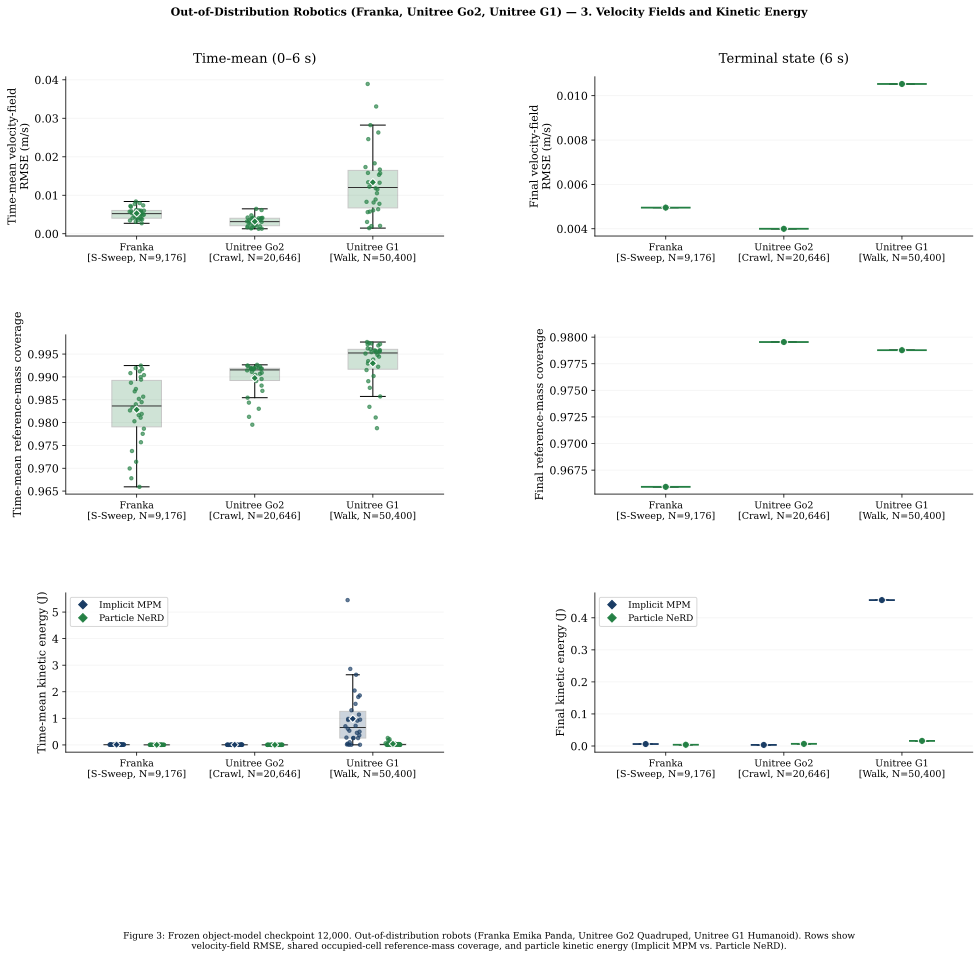

FRANKA · UNITREE GO2 · UNITREE G1
Particle NeRD: Out-of-distribution robotics benchmark
One shared elementary-object-trained Particle NeRD model evaluated zero-shot against implicit MPM on multi-link articulated robots: (1) particle-position error, (2) sand-surface error, and (3) velocity fields and kinetic energy.
Evaluation conditions
| Item | Condition |
|---|---|
| Articulated robots | Franka Emika Panda with welded end-effector box paddle (Paddle: 0.14 × 0.18 × 0.12 m welded to panda_hand); Unitree Go2 Quadruped (4 spherical feet: FL_foot, FR_foot, RL_foot, RR_foot); Unitree G1 29-DOF Humanoid (2 box feet: left_ankle_roll_link, right_ankle_roll_link). |
| Coordinates | Shared world coordinates; z points upward, gravity is (0, 0, −9.81) m/s². The nominal initial sand fill level is z = 0 m. |
| Sand beds and resolution | Franka: 1.2 × 1.0 × 0.25 m flat bed (9,176 particles); Unitree Go2: 2.0 × 1.2 × 0.30 m flat bed (20,646 particles); Unitree G1: 3.6 × 1.6 × 0.30 m flat bed (50,400 particles). MPM grid 0.04 m; particle spacing 0.032 m, radius 0.016 m. |
| Material | Density 1,600 kg/m³, Young’s modulus 10¹⁵ Pa, Poisson ratio 0.3, material friction 0.48, yield pressure 10¹⁵ Pa; collider friction 1.0. |
| Sampling and duration | 6.0 s trajectories at native interval 0.005 s (200 Hz, 1,200 steps). Field and surface metrics sampled on a shared 0.02 m measurement grid. |
| Shared model | One checkpoint from update 12,000 (trained exclusively on single rigid elementary objects and unconfined free-fall; zero robot trajectories in training). |
| Checkpoint SHA-256 | fb443cbd06b4e9d300d8e35be132b0793d1a984538b20e8598ec80613d81a3b6 |
Closed-loop coupled robot-in-the-loop simulations (Implicit MPM vs. Particle NeRD)
Each robot is evaluated in both recorded-motion open-loop replay (metrics 1–3 below) and closed-loop two-way coupled simulation where MJWarp steps the articulated robot with 200 Hz material reaction wrenches.

Franka Emika Panda: continuous S-sweep sand plowing (6.0 s, 50 fps)
Unitree Go2 Quadruped: free-base crawl on 0.30 m sand bed (6.0 s, 50 fps)
Unitree G1 Humanoid: closed-loop RL walking on 50,400 sand particles (6.0 s, 50 fps)
1. Particle-position error
Definition in metrics/README.md
Particle-position RMSE (mm) for the whole bed, near-contact particles (≤0.05 m from active robot links), and moving particles (>0.01 m/s) over 0–6 s (1,200 steps at 200 Hz).
| Robot | Whole bed RMSE Time-mean (0–6 s) |
Whole bed RMSE Terminal (6 s) |
Near-contact RMSE (≤0.05 m) Time-mean / Terminal |
Moving particles RMSE (>0.01 m/s) Time-mean / Terminal |
Frozen-bed baseline RMSE Time-mean / Terminal |
|---|---|---|---|---|---|
Franka Emika Panda (franka-flat, N=9,176) |
14.60 ± 5.00 mm | 20.65 mm | 15.72 mm / 24.17 mm | 51.78 mm / 71.58 mm | 18.89 mm / 26.12 mm |
Unitree Go2 Quadruped (quadruped-flat, N=20,646) |
8.87 ± 0.55 mm | 9.76 mm | 7.04 mm / 9.17 mm | 32.11 mm / 33.59 mm | 11.56 mm / 13.58 mm |
Unitree G1 Humanoid (g1-flat, N=50,400) |
17.56 ± 7.80 mm | 24.82 mm | 27.96 mm / 42.01 mm | 87.83 mm / 46.53 mm | 18.02 mm / 24.96 mm |

2. Sand-surface error
Definition in metrics/README.md
The mean and 95th-percentile symmetric surface distance measure the reconstructed sand shape on a 0.02 m measurement grid (separate from the 0.04 m MPM simulation grid).
| Robot | Mean symmetric surface distance Time-mean (0–6 s) |
Mean symmetric surface distance Terminal (6 s) |
95th-percentile surface distance Time-mean (0–6 s) |
95th-percentile surface distance Terminal (6 s) |
|---|---|---|---|---|
Franka Emika Panda (franka-flat, N=9,176) |
4.54 ± 0.79 mm | 6.11 mm | 16.48 ± 0.97 mm | 14.84 mm |
Unitree Go2 Quadruped (quadruped-flat, N=20,646) |
4.60 ± 0.46 mm | 5.81 mm | 16.79 ± 1.63 mm | 13.32 mm |
Unitree G1 Humanoid (g1-flat, N=50,400) |
2.76 ± 1.11 mm | 5.30 mm | 11.97 ± 2.12 mm | 13.59 mm |

3. Velocity fields and kinetic energy
Definition in metrics/README.md
Velocity-field RMSE, shared occupied-cell reference-mass coverage, and particle kinetic energy (Implicit MPM vs. Particle NeRD) on the 0.02 m measurement grid.
| Robot | Velocity-field RMSE (m/s) Time-mean / Terminal |
Reference-mass coverage Time-mean / Terminal |
Implicit MPM Kinetic Energy (J) Time-mean / Terminal |
Particle NeRD Kinetic Energy (J) Time-mean / Terminal |
|---|---|---|---|---|
Franka Emika Panda (franka-flat, N=9,176) |
0.0053 ± 0.0015 m/s / 0.0050 m/s | 0.983 / 0.966 | 0.0110 J / 0.0062 J | 0.0033 J / 0.0040 J |
Unitree Go2 Quadruped (quadruped-flat, N=20,646) |
0.0032 ± 0.0013 m/s / 0.0040 m/s | 0.990 / 0.980 | 0.0058 J / 0.0035 J | 0.0026 J / 0.0067 J |
Unitree G1 Humanoid (g1-flat, N=50,400) |
0.0134 ± 0.0092 m/s / 0.0105 m/s | 0.993 / 0.979 | 0.9848 J / 0.4551 J | 0.0409 J / 0.0161 J |
